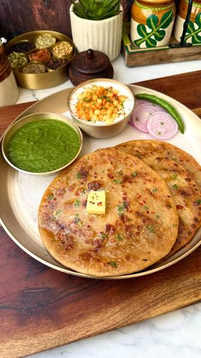

Aloo Parantha

Description:
Aloo Parantha is a popular Indian street food made with whole wheat flatbread (parantha) stuffed with a spicy potato filling. It is often served with yogurt or pickle and is a favorite breakfast or snack option.
Ingredients:
- 2 cups whole wheat flour
- 1/2 teaspoon salt
- 1/2 cup water (or as needed)
- 2 medium-sized potatoes, boiled and mashed
- 1 small onion, finely chopped
- 2 green chilies, finely chopped
- 1 teaspoon grated ginger
- 1/2 teaspoon cumin seeds
- 1/2 teaspoon garam masala
- 1/4 teaspoon red chili powder
- Salt to taste
- 2 tablespoons chopped fresh coriander leaves
- Ghee or oil for cooking
Steps:
- In a mixing bowl, combine the whole wheat flour and salt. Gradually add water and knead to form a soft dough. Cover and let it rest for 20-30 minutes.
- In another bowl, mix the mashed potatoes, chopped onion, green chilies, grated ginger, cumin seeds, garam masala, red chili powder, salt, and chopped coriander leaves to prepare the potato filling.
- Divide the dough into equal portions and roll each portion into a small ball. Roll out one ball into a small circle. Place a spoonful of the potato filling in the center and bring the edges together to seal the filling inside. Gently roll it out into a flat circle, being careful not to let the filling spill out.
- Heat a tawa or skillet over medium heat. Place the rolled-out parantha on the hot tawa and cook for 1-2 minutes until bubbles start to form. Flip it over and cook the other side for another 1-2 minutes. Apply ghee or oil on both sides and cook until golden brown and crispy.
- Repeat the process with the remaining dough and filling. Serve the hot aloo paranthas with yogurt, pickle, or chutney.